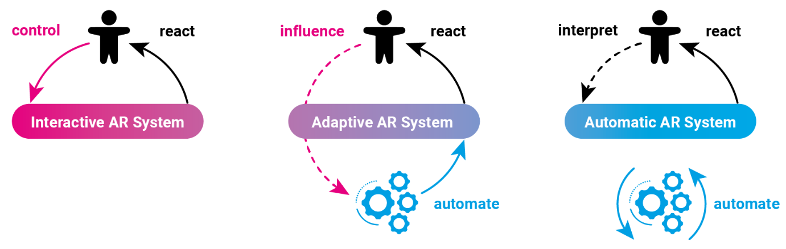

Who is in Control? Understanding User Agency in AR-assisted Construction Assembly


Venue. CHI (2025)
Abstract. Adaptive AR assistance can automatically trigger content to support users based on their context. Such intelligent automation offers many benefits but also alters users’ degree of control, which is seldom explored in existing research. In this paper, we compare high- and low-agency control in AR-assisted construction assembly to understand the role of user agency. We designed cognitive and physical assembly scenarios and conducted a lab study (N=24), showing that low-agency control reduced mental workloads and perceived autonomy in several tasks. A follow-up domain expert study with trained carpenters (N=8) contextualised these results in an ecologically valid setting. Through semi-structured interviews, we examined the carpenters’ perspectives on AR support in their daily work and the trade-offs of automating interactions. Based on these findings, we summarise key design considerations to inform future adaptive AR designs in the context of timber construction.
Link to this page: